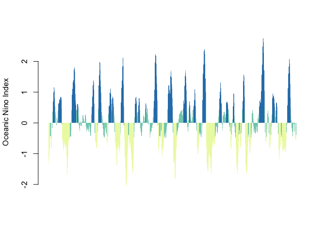

An R package to download the most up to date of these climate indices:
- Southern Oscillation Index
- Oceanic Nino Index
- North Pacific Gyre Oscillation
- North Atlantic Oscillation
- Arctic Oscillation
- Antarctic Oscillation
- Multivariate ENSO Index Version 2
- Pacific Decadal Oscillation
- Dipole Mode Index
Usage
Download Oceanic Nino Index data
oni <- download_oni()
head(oni)
#> # A tibble: 6 × 7
#> Year Month Date dSST3.4 ONI ONI_month_window phase
#> <int> <ord> <date> <dbl> <dbl> <chr> <fct>
#> 1 1950 Jan 1950-01-01 -1.62 NA <NA> <NA>
#> 2 1950 Feb 1950-02-01 -1.32 -1.34 JFM Cool Phase/La Nina
#> 3 1950 Mar 1950-03-01 -1.07 -1.17 FMA Cool Phase/La Nina
#> 4 1950 Apr 1950-04-01 -1.11 -1.18 MAM Cool Phase/La Nina
#> 5 1950 May 1950-05-01 -1.37 -1.07 AMJ Cool Phase/La Nina
#> 6 1950 Jun 1950-06-01 -0.74 -0.85 MJJ Cool Phase/La NinaAnd a quick plot to illustrate the data:
barcols <- c('#edf8b1', '#7fcdbb', '#2c7fb8')
barplot(
oni$ONI,
names.arg = oni$Date,
ylab = "Oceanic Nino Index",
col = barcols[oni$phase],
border = NA,
space = 0,
xaxt = "n"
)